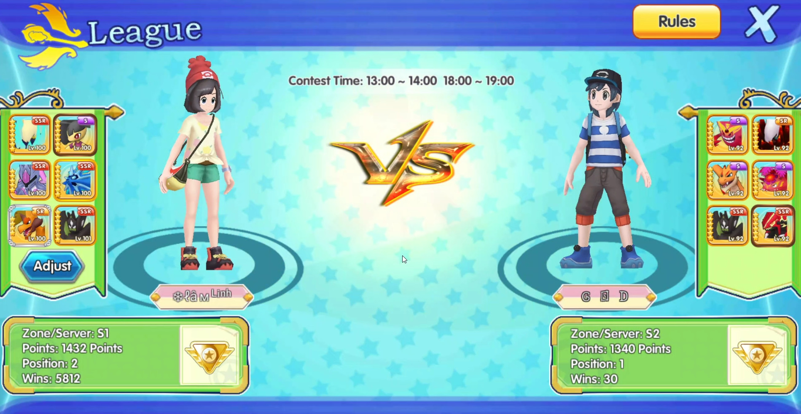

Pokémon (ポケモン) hay còn được gọi là Pocket Monsters tại Nhật Bản, tập trung vào các sinh vật hư cấu gọi là "Pokémon", mà con người, được gọi là Pokémon Trainers (Tiếng Việt gọi là Những nhà huấn luyện Pokémon), bắt và huấn luyện để chiến đấu với nhau để chơi thể thao. Bộ phim xoay quanh nhân vật chính - Satoshi (Ash Ketchum trong bản quốc tế) với ước mơ trở thành bậc thầy huấn luyện Pokémon. Cậu và một nhóm nhỏ người bạn đã có những chuyến du ngoạn vòng quanh thế giới cùng với Pokémon đồng hành của mình. Hãy đồng hành cùng Satoshi, Pikachu và những người bạn vượt qua những trận chiến nảy lửa để thu phục thật nhiều chiến binh Pokémon và diệt trừ cái ác nhé.
